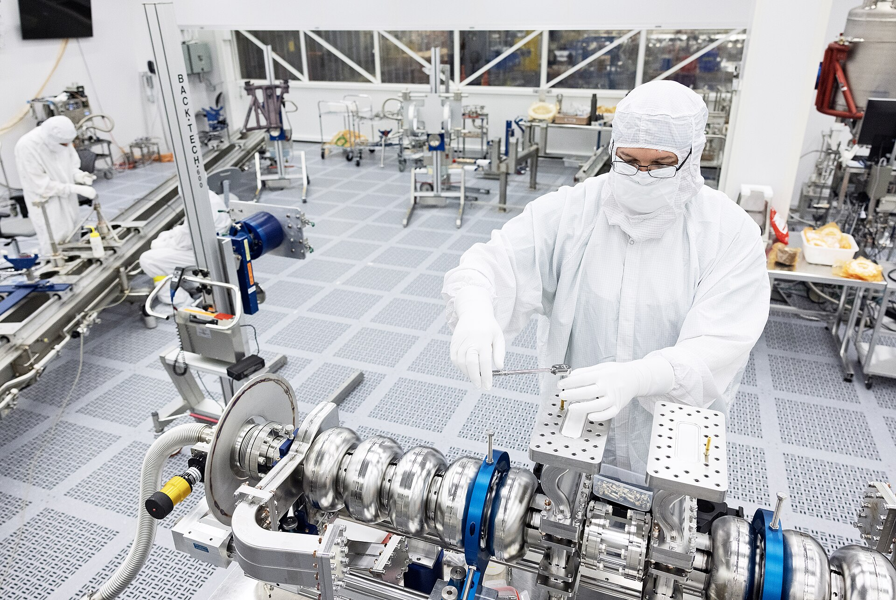
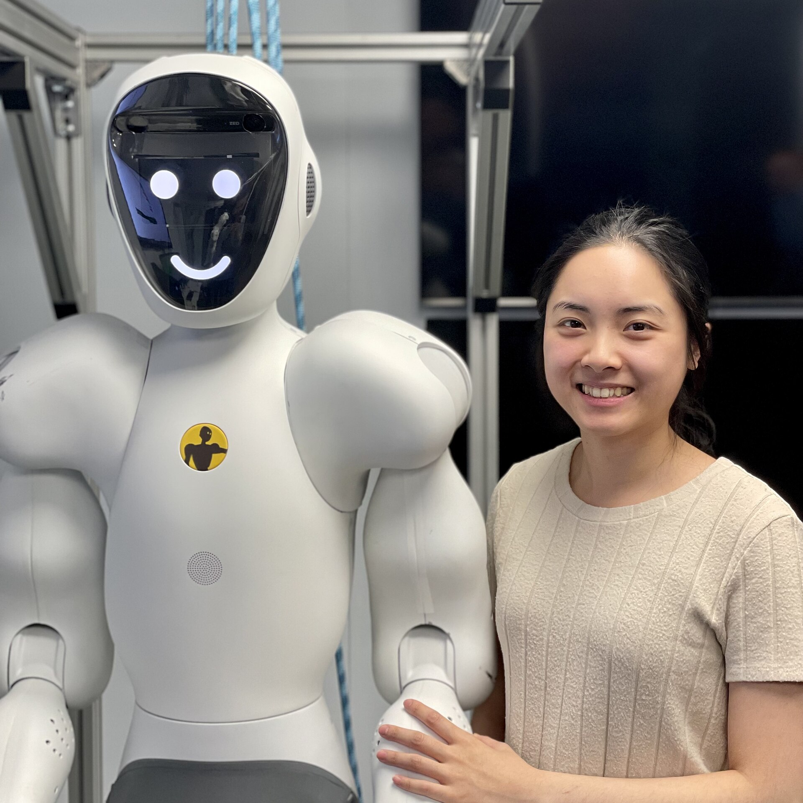
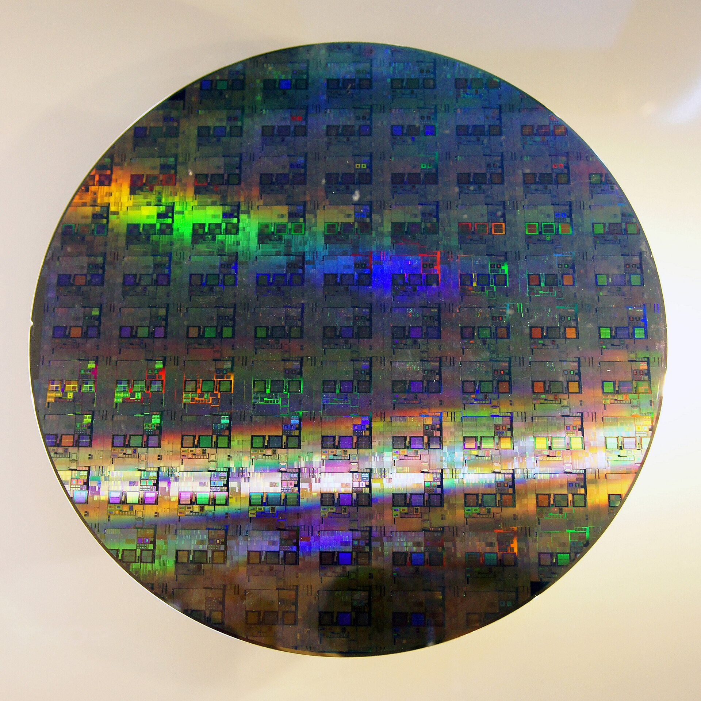

Rohini Kumar Barla
- M.Tech, IIT Kanpur
- Ex-Microsoft, Windows OS Team
- Co-founder, Apxor (Vizag product company)
- Founder, AI Karyashala
- Professor of Practice, Andhra University
 Photo: Chandu Saragadam, CC BY-SA 4.0, Wikimedia Commons
Photo: Chandu Saragadam, CC BY-SA 4.0, Wikimedia Commons
You joined CSE at the most interesting time ever
Software & AI in 2026 - what it means for you
From "answers questions" to "does the work"
Chatbot (2022) -> Coding assistant (2024) -> Autonomous agent (2026)
When you were in 9th class, ChatGPT had just launched. Today AI agents plan, write, test and fix software with little human help.
Part A · Close to home: Vizag and India
Vizag is becoming "AI Patnam"
Google Cloud India AI Hub - $15 billion, 1 GW data centre, 600 acres
Foundation stone laid in April 2026 by Union Minister Ashwini Vaishnaw and CM Chandrababu Naidu. Planned to be Google's largest AI hub outside the US. A Reliance-Brookfield-Digital Realty venture is also investing about $11 billion in an AI data centre in the same city.

Part A · Close to home: Vizag and India
Chips, assembled and tested in Vizag
Andhra Pradesh's first semiconductor project comes to Visakhapatnam
It is an OSAT facility (Outsourced Semiconductor Assembly and Test) under the India Semiconductor Mission. Also: Netrasemi unveiled India's first indigenous AI system-on-chip in 2026.
Part A · Close to home: Vizag and India
India: 4th in the world in AI
And 5th among the world's most digitalised economies
Source is the State of India's Digital Economy (SIDE) 2026 report. The report says keeping this position depends on skills - which means you.
Part B · What is happening in AI and software
A new "best AI" every few weeks
July 2026: four major labs released flagship models in one month
The busiest month for frontier model releases so far. Names to know: Anthropic (Claude), OpenAI (GPT), Google (Gemini), xAI (Grok), Moonshot (Kimi), DeepSeek. Do not memorise version numbers - they change monthly.
Part B · What is happening in AI and software
Free, open models are catching up
1 trillion parameters, downloadable by anyone [CHECK]
Moonshot's Kimi K3 is the largest open-weight model published; reported to coordinate up to 300 sub-agents [CHECK]. The gap between open and closed models is estimated at only a few months. This means students can run and study strong models themselves.
> Add a login page with tests ● Reading project files... ● Plan: form, validation, API call, tests ✓ Created src/pages/Login.jsx ✓ Created src/api/auth.js ✓ Created tests/login.test.js ● Running tests... ✗ 1 failed: empty password accepted ● Fixing validation... ✓ 12 passed, 0 failed >
Part B · What is happening in AI and software
AI now writes, tests and fixes code
From autocomplete to agents that build whole features
Tools students will meet: Claude Code, GitHub Copilot, Cursor, Codex. The developer's job is shifting from typing code to directing, reviewing and verifying it.
Part B · What is happening in AI and software
So powerful, a government pressed pause
A frontier AI model was withdrawn by government order, then restored
In June 2026 access to Anthropic's newest models was suspended under US export controls and restored on 1 July. First time this has happened to a frontier model. AI is now treated as strategic technology, like chips and rockets.

Photo: Nicholas-halodi, CC BY-SA 4.0, Wikimedia CommonsPart B · What is happening in AI and software
AI is getting a body
Robots that see, reason and work together
Google's Gemini Robotics ER 2 (July 2026) helps robots reason, collaborate and solve real-world tasks. Robotics needs C, operating systems, electronics and AI together.

Photo: Peellden, CC BY-SA 3.0, Wikimedia CommonsPart B · What is happening in AI and software
The whole world wants chips
$265 billion committed to new chip factories by one company [CHECK]
Almost every advanced AI chip is fabricated by one company in Taiwan. Countries, including India, are racing to build their own capacity. Link back to slide 5.
Part C · Your branch
CSE: fundamentals matter more, not less
AI writes the code. You must know if it is right.
Hiring managers say a developer who ships AI code without reviewing it is a liability; one who reviews and tests it is what companies need. That needs C, data structures, operating systems, networks, databases.
Part C · Your branch
AI & ML: from using models to building agents
Supervise AI, test it, fix it when it fails
The emerging skill set: supervising AI output, building and running evaluations, debugging agent failures, taking a demo to production. Maths (linear algebra, probability) and Python are the base.
Part C · Your branch
Attackers have AI too
About 1,968 attacks per organisation every week - up 70% since 2023
From Check Point's Cyber Security Report 2026 (figures for 2025). AI speeds up reconnaissance, phishing and decision-making for attackers.
Part C · Your branch
The first AI-run cyber attack
An AI agent did 80-90% of the work against 30 organisations
Detected by Anthropic in September 2025. Humans stepped in only at key moments. Defenders now use AI agents too - security is becoming AI versus AI, with humans in charge.
Part C · Your branch
Is this video real?
Deepfake cases in India up 550% since 2019
Projected losses of Rs 70,000 crore. Fraudsters use deepfakes to beat video KYC and impersonate executives. Around 65% of incidents go unreported. Forensic experts are the people who prove what is real.
Part C · Your branch
The law is catching up
Data protection is now enforced in India
The Data Protection Board of India became operational in late 2025; 2026 is the start of active enforcement of the DPDP Act. MeitY notified the IT Amendment Rules 2026 in February. Every company now needs people who can investigate and present digital evidence.
Part D · Closing
Two doors
"Only prompts" (closing) | "Fundamentals + AI" (opening)
Honest picture - jobs for developers aged 22-25 are down about 20% since 2022 (Stanford AI Index 2026). But companies building the AI economy are hiring more juniors: IBM tripling entry-level hiring, Cloudflare from about 60 interns to 1,111 [CHECK]. Three habits:
- Learn the basics deeply.
- Build real things, not just assignments.
- Use AI every day - and always check its work.
These jobs are being built in your own city while you study.
scan for updates & newsletters
Sources
- Analytics Vidhya, July 2026 AI releases
- Fast.io, Most powerful AI in 2026
- Google AI news recap, July 2026
- Build Fast With AI, AI news 17 July 2026
- News On AIR, Google Cloud AI Hub foundation stone, Visakhapatnam
- TCY Online current affairs 2026 (semiconductor project, SIDE 2026, Netrasemi)
- IO+, India's mega data city
- Check Point Cyber Security Report 2026 (via DevOps Digest)
- NHI Mgmt Group, AI and cybersecurity in 2026
- HyperVerge, Deepfakes in India 2026
- Chambers, Cybersecurity 2026 - India trends
- Stanford HAI AI Index 2026 (via Outsource Accelerator)
- Algeria Tech, entry-level job market 2026